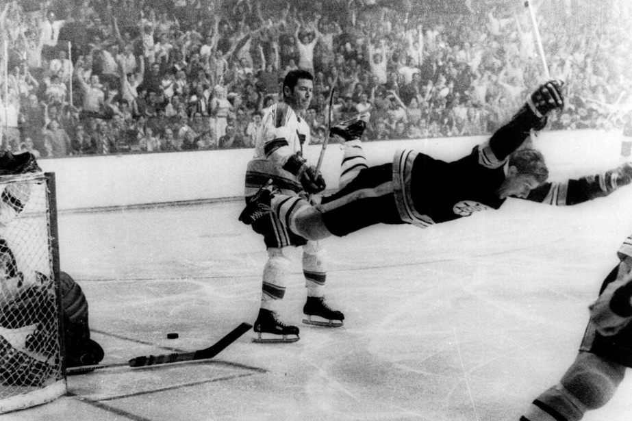
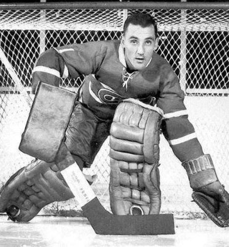

Le hockey sur glace est un sport canadien dont les origines remontent au début du XIXe siècle. Il est fondé sur plusieurs sports similaires pratiqués
en Europe, notamment le bandy en Scandinavie, et présente des similitudes avec le shinny et le hurley. Le mot hockey vient du vieux français « hocquet » qui signifiait
« crosse ». Il est largement admis que ce sont les Britanniques qui ont introduit ce sport en Amérique du Nord. Les soldats stationnés en Nouvelle-Écosse, au Canada,
ont joué les premiers matches.

Bobby Orr compte le but gagnant de la coupe stanley.

Jacque Plante, le gardien a avoir inventer le masque de gardien.